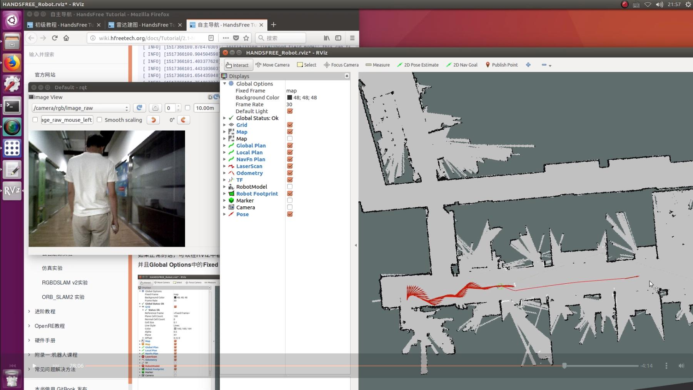

1. 自主导航
1.1. 简介
在实现导航功能之前需要对当前环境进行建图，在所下载的HandsFree_ROS包中所包含的地图是我们实验室的地图。所以你需要首先对你所在的环境使用激光雷达构建2维地图。 请确保你的电脑都连上了机器人USB通信接口，机器人已经上电，急停开关打开。自主导航实验，请按照顺序运行以下节点。
1.2. 机器人抽象节点
roslaunch handsfree_hw handsfree_hw.launch
1.3. 激光节点
如果使用rplidar：
roslaunch rplidar_ros rplidar.launch
如果使用hokuyo:
roslaunch rplidar_ros hokuyo.launch
1.4. 导航节点
在运行前先对handsfree/handsfree_2dnav/launch/move_base_amcl.launch文件中的地图路径参数进行修改：
<node name="map_server" pkg="map_server" type="map_server" args="$(find handsfree_2dnav)/map/lab.yaml" respawn="false" >
<param name="frame_id" value="/map"/>
</node>
将args="$(find handsfree_2dnav)/map/lab.yaml"改为之前建好的地图的名称，保存更改。
Tips:远程登录时"ssh -X handsfree@XX.XX."有-X可以直接使用图形化编辑软件gedit进行编辑
打开终端运行导航节点：
roslaunch handsfree_2dnav move_base_amcl.launch
运行结果将如下所示：
ROS_MASTER_URI=http://taozi-CW65S:11311
core service [/rosout] found
process[map_server-1]: started with pid [5842]
process[amcl-2]: started with pid [5843]
process[move_base_node-3]: started with pid [5844]
[ INFO] [1517366100.857502124]: Requesting the map...
[ INFO] [1517366100.861548693]: Received a 608 X 608 map @ 0.050 m/pix
[ INFO] [1517366100.878470309]: Initializing likelihood field model; this can take some time on large maps...
[ INFO] [1517366100.904504598]: Done initializing likelihood field model.
[ INFO] [1517366101.403377628]: Using plugin "static_layer"
[ INFO] [1517366101.443103603]: Requesting the map...
[ INFO] [1517366101.654435948]: Resizing costmap to 608 X 608 at 0.050000 m/pix
[ INFO] [1517366101.754267777]: Received a 608 X 608 map at 0.050000 m/pix
[ INFO] [1517366101.765321329]: Using plugin "obstacle_layer"
[ INFO] [1517366101.773442492]: Subscribed to Topics: scan
[ INFO] [1517366101.870169425]: Using plugin "inflation_layer"
[ERROR] [1517366101.914023959]: You must specify at least three points for the robot footprint, reverting to previous footprint.
[ INFO] [1517366102.035081884]: Using plugin "obstacle_layer"
[ INFO] [1517366102.064833744]: Subscribed to Topics: scan
[ INFO] [1517366102.162505652]: Using plugin "inflation_layer"
[ERROR] [1517366102.208362231]: You must specify at least three points for the robot footprint, reverting to previous footprint.
[ INFO] [1517366102.312270125]: Created local_planner base_local_planner/TrajectoryPlannerROS
[ WARN] [1517366102.333831658]: /move_base_node/TrajectoryPlannerROS/acc_lim_th should be acc_lim_theta, this param will be removed in J-turtle
[ INFO] [1517366102.354552287]: Sim period is set to 0.14
[ WARN] [1517366102.383073267]: Trajectory Rollout planner initialized with param meter_scoring not set. Set it to true to make your settins robust against changes of costmap resolution.
[ INFO] [1517366103.099663496]: Recovery behavior will clear layer obstacles
[ INFO] [1517366103.146419402]: Recovery behavior will clear layer obstacles
[ INFO] [1517366103.257528221]: odom received!
1.5. 利用RVIZ可视化导航过程
rosrun rviz rviz -d `rospack find handsfree_2dnav`/rviz/HANDSFREE_Robot.rviz
如果正常的话，可以在RVIZ中看到机器人模型及激光雷达扫描到的可视化数据。并且Global Options中的Fixed Frame选择map

1.6. 初始位置的标定
在RVIZ地图中看到的机器人位置可能并不是其当前的实际位置，为了机器人的自主定位和导航，我们需要为其手动标定其初始位置。
使用RVIZ中的2D Pose Estimate手动标定其初始位姿，调整RVIZ中机器人的位置，让其尽量与实际位姿一致，然后导航节点会根据雷达信息对其位置进行估计。
方法:先点击2D Pose Estimate,然后将鼠标移动到机器人在地图中的实际位置,摁住左键,调整好方向后松开。
1.7. 自主导航
使用RVIZ中的2D Nav Goal功能为机器人指定导航的目标点。
方法:点击2D Nav Goal,然后用鼠标指定一个地图上机器人可以到达的地方,如果一切正常的话，机器人将自主移动到所指定的目标点。
1.8. 其他
本节教程运行节点主要包含机器人抽象节点、激光节点、导航节点和可视化工具RVIZ。建议设置好远程设置(如果工控机IP有变化,请及时更改),将工控机作为MASTER,在工控机上运行前三个节点,可视化部分可以在自己笔记本上运行。